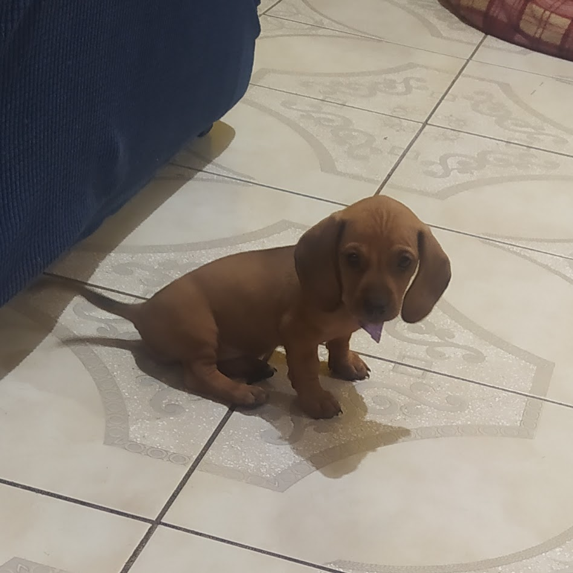

Ella es Sol es la perrita mas linda del mundo, si ya nostaste ella es una perrita salchicha, y es muy tierna y empalagosa. Todos los dias a las 5 de mañana me despierta para que me apure para ir a la escuela, y se mete dentro de mis cobijas ya que los salchichas son friolentos.

Cuando llegó a mi casa era muy chiquita, me la regaló mi tia ya que ella ya tenia dos perritos y no podia tener otro mas, no me pude resistir a su belleza.
Sol es una perrita muy feliz porque siempre esta acompañada de Luna su hermanita, nunca se pueden separar y siempre tienen que estar jugando o durmiendo.